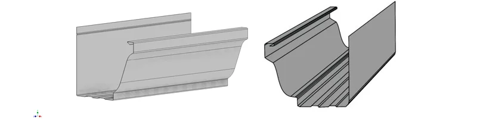
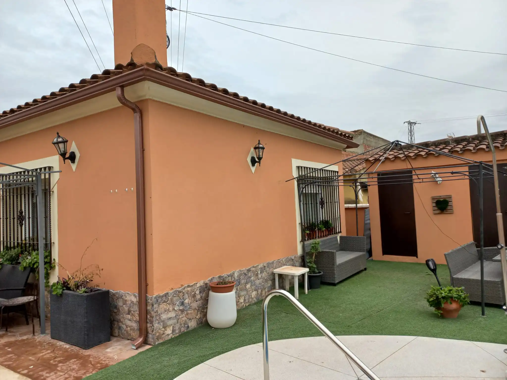
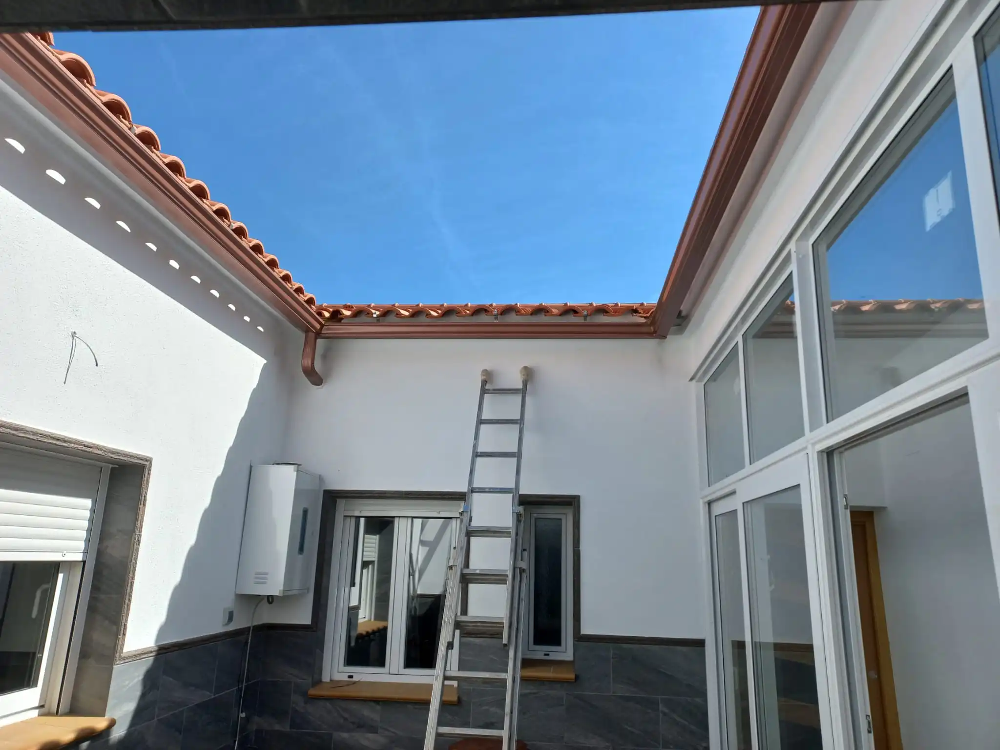
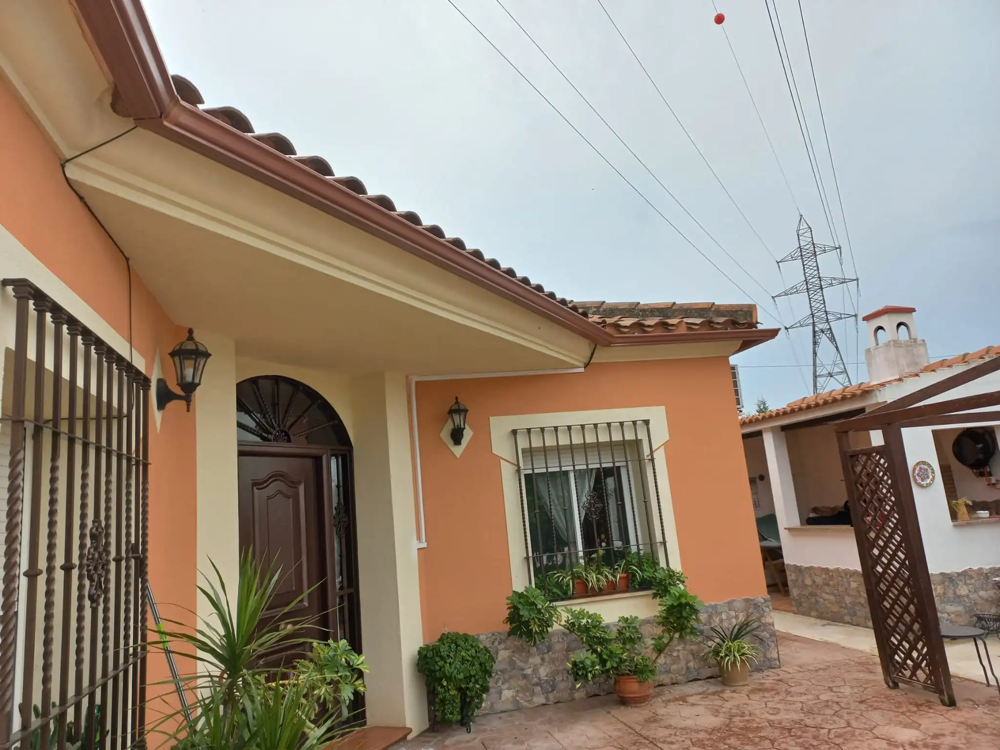

Instalación de Canalones
La gran importancia de la instalación de un canalón en su tejado es evitar la aparición de goteras y la acumulación de agua en su tejado generando problemas estructurales en su edificio.
También nos encargamos de la Limpieza de canalones porque se haya creado un atasco en él para que pase el agua bien y sea capaz de bajar por el canalon, si no lo limpiamos puede generar problemas con goteras, humedades...

En Canalplad utilizamos el canalón llamado "Cornisa", cuenta con una gran calidad
en susmateriales, una gran variedad de colores y destaca por su gran estética en la fachada.
Cornisa se adapta a todo tipo de construcciones cumpliendo a la perfección con su tarea.
En este modelo de Canalón podemos poner un chorro o añadirle un bajante.



Si necesitas más información sobre la instalación de canalones no
dudes en ponerte en contacto con nosotros. Si necesitas una instalación puedes pedir presupuesto sin compromiso.
Pide presupuesto sin compromiso